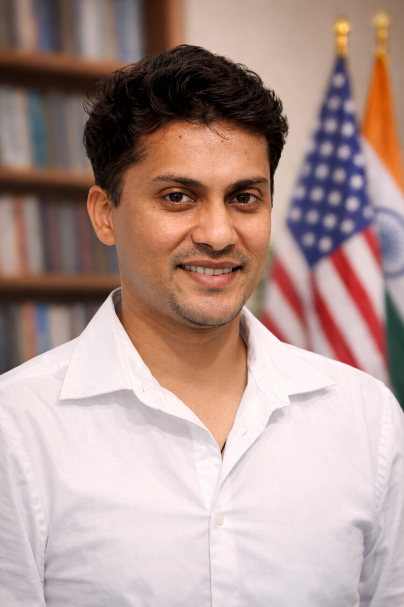

Smart Wound Monitoring Systems
Integrated wound-care technologies combining sensing, biomarker detection, wearable electronics, and data-driven healing assessment.
Research Assistant Professor · Vanderbilt University USA
My research focuses on the development of microfluidic systems, cellular biointerfaces, AI-integrated biosensing platforms, and additive biofabrication approaches to investigate biological processes at the intersection of biology, electronics, and engineering. I study the fundamental interactions between materials, electronic systems, and living cells to understand phenomena across cellular, tissue, and system-level scales. This work integrates fluidic architectures, device platforms, and computational frameworks to enable quantitative interrogation of biological and physiological signals. The overarching objective is to establish cross-disciplinary principles governing bioelectronic interfaces and to advance scalable experimental platforms for studying complex biological systems.

The future of translational sensing lies in systems that do not treat materials, device design, fluid handling, electronics, and data analysis as separate layers, but as a single integrated architecture. My work seeks to establish such unified platforms across biosensing, wearable health monitoring, and intelligent diagnostics.
Dr. Vivek A. Kamat is a Research Assistant Professor whose scholarly work spans biosensors, microfluidics, wearable sensing technologies, nanoparticle-enabled systems, and AI-assisted analytical platforms. His academic trajectory has been shaped by a consistent emphasis on translational engineering, wherein fundamental advances in materials, electrochemistry, device design, and biomedical systems are systematically directed toward clinically relevant and technologically deployable solutions.
Development of advanced sensing platforms for hormone detection, infectious disease diagnostics, and physiologically relevant biochemical measurements using electrochemical and magnetic transduction strategies.
Design of microfluidic platforms for controlled processing, biological analysis, and downstream purification with emphasis on continuous flow architectures and translational usability.
Fabrication of wearable sensing systems and smart wound-monitoring platforms capable of integrating sensing, data acquisition, and physiological interpretation in real time.
Application of machine learning and intelligent data-processing methods to automate signal interpretation, quantify biological responses, and enhance decision-making in sensing-driven healthcare environments.
Integrated wound-care technologies combining sensing, biomarker detection, wearable electronics, and data-driven healing assessment.

Controlled fluidic platforms for downstream purification, biological studies, and complex interactions between cells, materials, and engineered microsystems.

AI-guided fabrication and device development workflows integrating additive manufacturing, functional materials, and smart process control.
Label and bio-active free electrochemical detection of testosterone hormone using MIP-based sensing platform
AI enabled ensemble deep learning method for automated sensing and quantification of DNA damage in comet assay
Active microfluidic reactor-assisted controlled synthesis of nanoparticles and related potential biomedical applications
Smart Bandage to Monitor Combat Wounds and Control Bacterial Infections During Military Operations
Bio-acceptability of wearable sensors: A mechanistic study towards evaluating ionic leaching induced cellular inflammation
Magnetic point-of-care biosensors for infectious disease diagnosis
Ph.D., Biotechnology – Savitribai Phule Pune University, India (2016)
M.Sc., Biotechnology – Savitribai Phule Pune University, India (2011)
B.Sc., Biotechnology – Savitribai Phule Pune University, India (2009)
Research Assistant Professor – Vanderbilt University (Current)
Research Scientist – Florida International University
Assistant Research Professor – Florida International University
Assistant Teaching Professor – Florida International University
Postdoctoral Research Associate – Florida International University
Google Scholar Citations: 330+
h-index: 9
i10-index: 9
Peer-reviewed publications: 29+
Research contributions in biosensors, electrochemical sensing, microfluidic platforms, AI-enabled sensing systems, nanoparticle synthesis, and wearable diagnostic devices.
Publications include work in Scientific Reports, ACS Applied Materials & Interfaces, Biosensors and Bioelectronics, Materials Science and Engineering B, and ECS Sensors Plus.
Continuous Flow Downstream Microfluidic Platform (DM-Chip) for Purification of Biomolecules
Invention Disclosure ID: D2021-0023 – Florida International University (2021)
VR-Enhanced Glove with Dynamic Weight Simulation
Invention Disclosure ID: D2025-0026 – Florida International University (2025)
Editorial Board Member – Scientific Reports (Nature Portfolio) (2023–Present)
Courses taught include Introduction to Engineering, Electrical Hardware for AI Systems, Signals and Systems, Edge AI Systems and Data Harvesting, and Internet of Things sensor platforms.
Mentored and supervised 20+ master's and undergraduate students in biosensors, microfluidics, wearable sensing technologies, and AI-enabled sensing platforms.
Participation in NSF I-Corps commercialization programs and technology transfer activities focused on wearable biosensors, microfluidic diagnostics, and sensing platforms.
Email: kamatbiotech@gmail.com
Google Scholar: View profile
I welcome collaborations across biosensors, microfluidics, wearable diagnostics, AI-enabled sensing systems, and translational biomedical engineering.